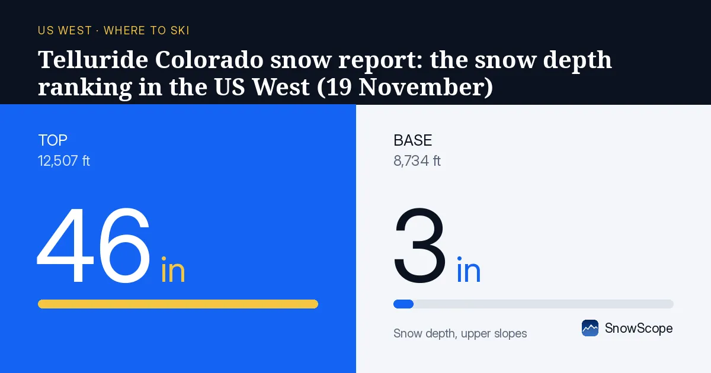

Telluride Colorado snow report: the snow depth ranking in the US West (19 November)
Telluride holds the deepest snow in the US West right now: 125 cm (49 in) on the upper slopes as of 19 November. The mountain sits well ahead of Crested Butte at 122 cm (48 in) and Palisades Tahoe Alpine Meadows at 107 cm (42 in), making it the choice for depth-hunters across the region today.
See the live snow forecast for Telluride in the SnowScope appSnow depth, powder alerts and the 3D map, free.
Where the snow sits today
Telluride shows the classic pattern of an early-season mountain: snow that builds with altitude. The base at 2,662 m has just 8 cm (3 in), mid-mountain at 3,237 m holds 40 cm (16 in), and the top at 3,812 m carries 116 cm (46 in). Most runs live in that middle band, so 40 cm is the number that matters for most skiers right now.
The region as a whole has filled in fast. Snow now covers 782,430 km² of the US West, up from 526,410 km² two days earlier. That spread reflects a system that pushed moisture across multiple states and elevations, leaving 173 of the 193 resorts in the region with snow at altitude.
| Resort | Snow depth | New snow, 72 h | Coming, next days | Top |
|---|---|---|---|---|
| Telluride | 49 in (125 cm) | 4 in (10 cm) | 5 in (13 cm) | 12,507 ft (3,812 m) |
| Crested Butte | 48 in (122 cm) | 2 in (5 cm) | 4 in (10 cm) | 11,444 ft (3,488 m) |
| Palisades Tahoe Alpine Meadows | 42 in (107 cm) | 26 in (66 cm) | 10 in (26 cm) | 8,494 ft (2,589 m) |
| Bear Valley | 40 in (102 cm) | 26 in (67 cm) | 8 in (20 cm) | 8,484 ft (2,586 m) |
| Kirkwood | 40 in (102 cm) | 28 in (71 cm) | 8 in (20 cm) | 9,462 ft (2,884 m) |

How Telluride stacks against the past
At mid-mountain (3,237 m), Telluride carries 56 cm (22 in) today—twice the usual depth for 19 November (30 cm / 12 in). This puts the mountain deeper than it was on this date in 30 of the last 46 winters. That is a solid early lead, not a record, but enough to open terrain that normally stays closed until December.
Crested Butte tells a different story. At the same altitude band (3,135 m), it has only 11 cm (4 in), well below the typical 31 cm (12 in) for mid-November. Only 12 of the past 46 winters on this date had snow that shallow there. Palisades Tahoe Alpine Meadows, by contrast, is running far ahead: 79 cm (31 in) at 2,243 m, deeper than every 19 November in the past 46 years; the normal is just 9 cm (4 in).
What stations measured on the ground
Stations near Telluride caught heavy snow on 17 November. The Alta Lakes gauge at 3,441 m (measured 2 km away) showed 61 cm (24 in) on the ground, with 5 cm (2 in) added in 24 hours. Wolf Creek Summit at 3,331 m recorded 84 cm (33 in) on 17 November, 13 cm (5 in) of it fresh. These single-point measurements confirm that snow is real and sitting at altitude across the region.
The gap between station values and SnowScope estimates reflects the fact that stations sit in one place and catch one day's data, while the map estimates the whole upper-slope band.
The shape of snow by height
Telluride's depth profile shows steep growth with elevation. From the base to the summit, snow nearly doubles every 500 m of altitude gain. The mid-mountain sits in the zone where most skiers spend their time—40 cm is enough to cover rocks and to ski for a full day without hitting ground, but thin enough that south-facing slopes may show patches of brown by afternoon.
The freezing level on 19 November ranges from 2,460 m to 3,310 m. That means wet snow below 2,460 m and dry snow above 3,310 m, with a slushy band in between. High, north-facing slopes stay the driest longest. If you are picking runs, aim for shade.
What comes next
Between now and 22 November, Telluride will gain about 13 cm (5 in), split between Friday (4 cm / 2 in) and Saturday (9 cm / 4 in). That is modest, but it arrives in the forecast window, so check the map again before you book your trip. The freezing level will drop into the next few days, pushing the wet-snow line lower.
Palisades Tahoe Alpine Meadows and the Sierra resorts are forecast to pick up 26 cm (10 in) over the same three days—twice what Telluride expects. That shift keeps the Sierra in the conversation for fresh snow even as Telluride holds the depth crown today.
What this means for your trip
Telluride's lead in depth is real but comes with caveats. Early-season snow is thin at the base, so focus on higher runs and avoid the bottom of trails. Rock and grass hide under shallow cover. Resorts report when they open; check Telluride's website before you drive—depth and open terrain are not the same thing.
If you are chasing the season, Palisades Tahoe Alpine Meadows is running nearly as deep (107 cm vs. 125 cm) and forecast to gain snow faster. Crested Butte lags by 3 cm—a small gap that widens if you look at the forecast. SnowScope shows the map; a probe on the mountain shows you the truth. Carry one.
Tips for skiers
- Ski north-facing slopes and tree areas above 3,200 m at Telluride: they hold snow longer than south-facing terrain in November.
- Early-season coverage is thin. Stay on marked, groomed runs; rocks and stumps lurk under shallow snow across the base and mid-mountain.
- Watch the freezing level. On 19 November it swings from 2,460 m to 3,310 m—wet snow near the base, dry snow at the peak. Expect heavy, sticky snow if you drop low.
- Before you ski off-piste or tour in avalanche terrain, check the Colorado Avalanche Information Center bulletin. Telluride sits at danger level 2 today; that can change quickly with new snow.
- Depth numbers are estimates. Carry a probe and test the snowpack yourself, especially on steep slopes or in gullies where snow depth varies by metres.
About these numbers
Resort snow depths are the deepest snow on the resort's upper slopes on the date shown; they are estimates for an area, not a measurement at one point. Forecasts can change. Always read the official avalanche bulletin before going off-piste.
Official avalanche bulletins: Colorado Avalanche Information Center · avalanche.org (US national portal)
Cite this report
For research, teaching or the press: the numbers and charts are free to reuse under CC BY 4.0 with this citation.
SnowScope (2026), Telluride Colorado snow report: the snow depth ranking in the US West (19 November), https://snowscope.app/blog/en/2026/11/us-west-telluride-snow-depth-today-19-november-2026.html, accessed 2026-11-19
SnowScope (Atlas Labs). (2026, November 19). Telluride Colorado snow report: the snow depth ranking in the US West (19 November). SnowScope snow reports. https://snowscope.app/blog/en/2026/11/us-west-telluride-snow-depth-today-19-november-2026.html
BibTeX
@misc{snowscope2026uswesttelluridesnowdepth,
author = {{SnowScope (Atlas Labs)}},
title = {Telluride Colorado snow report: the snow depth ranking in the US West (19 November)},
year = {2026},
month = nov,
howpublished = {\url{https://snowscope.app/blog/en/2026/11/us-west-telluride-snow-depth-today-19-november-2026.html}},
note = {Published 2026-11-19 14:03 UTC; accessed 2026-11-19}
}· CC BY 4.0 · Methods, data and tools →
Telluride: snow and temperature by height, this winter vs last (tools) →
Follow Telluride
Free: a message when fresh snow is coming, and the forecast every morning.
More snow reports

Palisades Tahoe Alpine Meadows leads the US West with 30 in (75 cm) on upper slopes. Fresh snow and a strong forecast make it the weekend pick for 18 November.

Fresh snow keeps falling at Tahoe resorts this weekend. Upper slopes at Palisades Tahoe Alpine Meadows hold 107 cm (42 in) today, 19 November.

Telluride has 39 inches today. Peak snow weeks historically arrive in late December and March, not November.